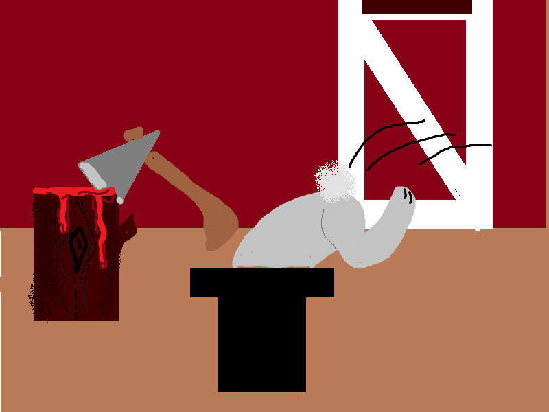

<!DOCTYPE html>

<html>
<head>
<!-- loading jQuery from CDN with local backup !-->
<script src="https://ajax.googleapis.com/ajax/libs/jquery/1.11.3/jquery.min.js"></script>
<script type="text/javascript">
  if (typeof jQuery == 'undefined') {
  document.write(unescape("%3Cscript src='../jquery-1.11.3.js' type='text/javascript'%3E%3C/script%3E")); }
</script>
<!-- All of the styling for the webpage !-->
<style>
  p {text-align:center}
  p.text {
    font-size:1.5em;
    font-weight:bold;
    border-radius: 28px;
    border-style:solid;
    background:#CCCCFF;
    border-color:#6699FF;
    }
  div {
    margin-left:auto;
    margin-right:auto;
    width:auto;
  }
  .btn {
  background: #3498db;
  background-image: -webkit-linear-gradient(top, #3498db, #2980b9);
  background-image: -moz-linear-gradient(top, #3498db, #2980b9);
  background-image: -ms-linear-gradient(top, #3498db, #2980b9);
  background-image: -o-linear-gradient(top, #3498db, #2980b9);
  background-image: linear-gradient(to bottom, #3498db, #2980b9);
  -webkit-border-radius: 28;
  -moz-border-radius: 28;
  border-radius: 28px;
  font-family: Arial;
  color: #ffffff;
  font-size: 1.5em;
  padding: 10px 20px 10px 20px;
  text-decoration: none;
}

.btn:hover {
  background: #3cb0fd;
  background-image: -webkit-linear-gradient(top, #3cb0fd, #3498db);
  background-image: -moz-linear-gradient(top, #3cb0fd, #3498db);
  background-image: -ms-linear-gradient(top, #3cb0fd, #3498db);
  background-image: -o-linear-gradient(top, #3cb0fd, #3498db);
  background-image: linear-gradient(to bottom, #3cb0fd, #3498db);
  text-decoration: none;
}
  
</style>
<script>
  $(document).ready(function() {
    //This is just hiding some things that don't need to be seen on the splash screen
    $("#button2").hide();
    $(".text").hide();
    
    //Setting up some variables, including the story line arrays
  var storyLine1 = ["After a long day of work at the farm, you decide to grab a beer and take "+
                   "one last tour around the fields before heading inside to eat dinner.  "+
                   "While scanning the area you notice that something seems different about "+
                   "one of the rows of carrots.  What would you like to do?", "You step closer to "+
                   "the strange looking carrot and in the waning light of dusk you haphazardly "+
                   "grab the carrot by the greens and give it a yank.  Egads!  It wasn't a carrot"+
                   " at all, it was a rabbit!  What do you do?", "You shriek and throw the rabbit "+
                   "to the ground!  It hops over and disappears down the same hole you pulled it "+
                   "out of!  Gadzooks, what do you do now?", "You swear profusely, cursing all "+
                   "things earthly for several minutes before you notice another carrot disappear "+
                   "only to be replaced by a set of familiar gray ears.  Now what do you do?",
                   "You run over and jump as high as you can before coming down as hard as you can "+
                   "with your boots right in the spot where that furry little head was just moments "+
                   "before.  But instead of the satisfying crunch of rodent skull beneath your feet "+
                   "you sink up to your waist in rich farm compost.  All you can do is dangle help"+
                   "lessly while the rabbit pops up next to you and falls over laughing.  The end.",
                   "You hop around stomping your feet.  It accomplishes nothing, however you notice "+
                   "out of the corner of your eye another carrot disappear only to be replaced by "+
                   "a set of familiar gray ears.  What do you do?", "Having let a potential dinner "+
                   "escape, you decide that the day just isn't worth finishing.  You march back "+
                   "to the farm house in defeat, head hung low with thoughts of inadequacy rolling "+
                   "around your head.  You decide to just head straight to bed and fall asleep "+
                   "with your dirt-stained clothes still clinging to your worthless body."];
  var storyLine2 = ["After a long day of work at the farm, you decide to grab a beer and take "+
                   "one last tour around the fields before heading inside to eat dinner.  "+
                   "While scanning the area you notice that something seems different about "+
                   "one of the rows of carrots.  What would you like to do?", "You take a sip "+
                   "from your beer and all of the sudden one of the carrots starts moving!  You "+
                   "walk over and pull the moving carrot up by the greens!  It wasn't a carrot, "+
                   "it was a <b>rabbit!</b>", "You quickly throw the rabbit into an impossibly "+
                   "handy wire cage and glare at it while shaking your hand at the sky.  Now, "+
                   "what the heck are you going to do with a <i>rabbit</i>?", "You load the "+
                   "caged rabbit into the back of your rickety pickup truck and using the cover "+
                   "of night, you drive down the rural unpaved road that separates your farm "+
                   "property from that of that corn shucking neighbor of yours.  Once you reach "+
                   "a nice secluded pullout, you hop out of the truck and grab the cage.  "+
                   "The rabbit looks up at you with a heart-melting sad lonely look, and blinks "+
                   "a single salty tear out of his eye.  What do you do?", "You blink back the "+
                   "tears welling up in your own eyes and set the steel cage on the ground.  "+
                   "You look down at the rabbit, steel your nerves, and flip over the small "+
                   "metal lever that opens the trap mechanism.  The rabbit creeps cautiously "+
                   "forward and sets his paw on the cold hard earth.  It turns and looks back "+
                   "at you, and gives you a one-fingered salute before dashing back towards your "+
                   "property line!", "You march back to the farm house with a rabbits ears "+
                   "firmly in the grasp of your hand announcing \"Dinner!\".  Just as you bend "+
                   "over to set the rabbit on the log you use to behead your potential dinners"+
                   ", your tophat falls off and quick as lightning, the rabbit wriggles free of "+
                   "your grasp and jumps into it, disappearing forever."];
  var slideNum = 0; //this will keep track of how many times the story has shifted
  var storyLine = 0; //this keeps track of which story line (there are only two at the moment)
  var theEnd = 0; //when this is true, the buttons will return the user to the first story page
  
  //This is the function that displays the next storyline depending on which button was pressed
  function makeChoice(choiceNum) {
  
 if (slideNum == 0) {
    $("#picRegion").html('');
    $("#storyRegion").html(storyLine1[0]);
    $("#button1").attr('value', 'Investigate rogue carrot');
    $("#button2").attr('value', 'Take another sip of beer');
 }
 
 ///////////////////////////////////////////////
 
 if (slideNum == 1 && choiceNum == 1) {
    $("#picRegion").html('');
    $("#storyRegion").html(storyLine2[1]);
    $("#button1").attr('value', 'Throw rabbit');
    $("#button2").attr('value', 'Put rabbit in cage');
    storyLine = 1;
 }
 if (slideNum == 1 && choiceNum == 0) {
    $("#picRegion").html('');
    $("#storyRegion").html(storyLine1[1]);
    $("#button1").attr('value', 'Throw rabbit');
    $("#button2").attr('value', 'Put rabbit in cage');
    storyLine = 0;
 }
 
 ///////////////////////////////////////////////
 
 if (slideNum == 2 && choiceNum == 0) {
    $("#picRegion").html('');
    $("#storyRegion").html(storyLine1[2]);
    $("#button1").attr('value', 'Swear profusely');
    $("#button2").attr('value', 'Stomp feet hopelessly');
    storyLine = 0;
 }
 
 if (slideNum == 2 && choiceNum == 1) {
    $("#picRegion").html('');
    $("#storyRegion").html(storyLine2[2]);
    $("#button1").attr('value', 'Rabbit stew');
    $("#button2").attr('value', 'Release it peacefully in close vicinity to your competitors farm');
    storyLine = 1;
 }
 
 /////////////////////////////////////////////
 if (slideNum == 3 && choiceNum == 1 && storyLine == 0) {
    $("#picRegion").html('');
    $("#storyRegion").html(storyLine1[5]);
    $("#button1").attr('value', 'Stomp on its furry little head');
    $("#button2").attr('value', 'Cry and go to bed');
 }
 if (slideNum == 3 && choiceNum == 0 && storyLine == 0) {
    $("#picRegion").html('');
    $("#storyRegion").html(storyLine1[3]);
    $("#button1").attr('value', 'Stomp on its furry little head');
    $("#button2").attr('value', 'Cry and go to bed');
    storyLine = 0;
 }
 
 if (slideNum == 3 && choiceNum == 1 && storyLine == 1) {
    $("#picRegion").html('');
    $("#storyRegion").html(storyLine2[3]);
    $("#button1").attr('value', 'Rabbit stew');
    $("#button2").attr('value', 'Heartlessly release rabbit deep within enemy territory');
    storyLine = 1;
 }
 
 /////////////////////////////////////////////
 if (slideNum == 4 && choiceNum == 1 && storyLine == 0) {
    $("#picRegion").html('');
    $("#storyRegion").html(storyLine1[6]);
    $("#button1").attr('value', 'Play again');
    $("#button2").hide();
    slideNum = 0;
    storyLine = 0;
    theEnd = 1;
 }
 if (slideNum == 4 && choiceNum == 0 && storyLine == 1) {
    $("#picRegion").html('');
    $("#storyRegion").html(storyLine2[5]);
    $("#button1").attr('value', 'Play again');
    $("#button2").hide();
    slideNum = 0;
    storyLine = 0;
    theEnd = 1;
 }
 if (slideNum == 4 && choiceNum == 0) {
    $("#picRegion").html('');
    $("#storyRegion").html(storyLine1[4]);
    $("#button1").attr('value', 'Play again');
    $("#button2").hide();
    slideNum = 0;
    storyLine = 0;
    theEnd = 1;
 }
 if (slideNum == 4 && choiceNum == 1) {
    $("#picRegion").html('');
    $("#storyRegion").html(storyLine2[4]);
    $("#button1").attr('value', 'Play again');
    $("#button2").hide();
    slideNum = 0;
    storyLine = 0;
    theEnd = 1;
    }
    
    }
  //the code for the buttons, the first button also acts as the start button for the story
  //so i have it "show" the hidding elements after it is pressed
  //it also will reset the game if it has reached the end.
  $("#button1").click(function() {
    $("#button2").show();
    $(".text").show();
    if (theEnd == 1) {
    $("#picRegion").html('');
    $("#storyRegion").html(storyLine1[0]);
    $("#button1").attr('value', 'Investigate rogue carrot');
    $("#button2").attr('value', 'Take another sip of beer');
    theEnd = 0;
    }
    else {
    makeChoice(0);
    slideNum = slideNum + 1;
  }
    });
  $("#button2").click(function() {
    if (theEnd == 1) {
    $("#picRegion").html('');
    $("#storyRegion").html(storyLine1[0]);
    $("#button1").attr('value', 'Investigate rogue carrot');
    $("#button2").attr('value', 'Take another sip of beer');
    theEnd = 0;
    }
    else {
    makeChoice(1);
    slideNum = slideNum + 1;
    }
    });
 });
</script>
<!-- and here is the very little html that was needed to get it to function and look properly !-->
<title>farm. choose your own adventure</title>

</head>

<body>
<div><p id="picRegion"></p></div>
<p class="text" id="storyRegion"></p>
<p><input type="button" id="button1" class="btn" value="Click here to start the story">  
<input type="button" id="button2" class="btn" value="Don't click here yet"></p>

</body>
</html>
